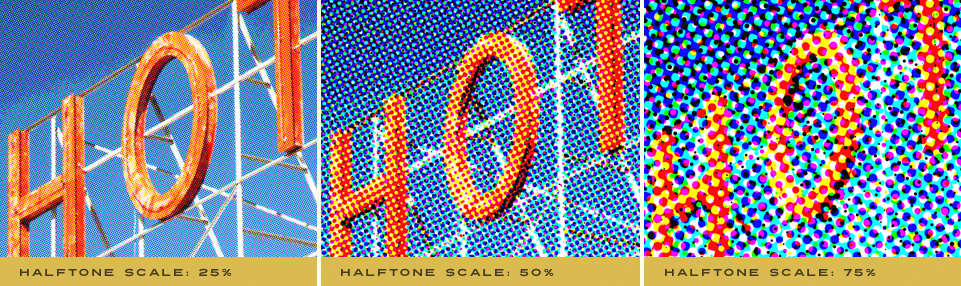

Let's Learn About Permanent Press 2
Halftone Settings
In order to work with a wide range of images, we implemented robust halftone effects and features. Not only can you fine-tune the dot shape and the angle of the halftone dot, but you have complete control over the scale of the halftone effect and the amount of halftone you use per ink plate.

|
While many of the halftone features are obvious, the Halftone Amount control may be a bit of a pleasant surprise. Halftone Amount gives you control over how much halftone to apply versus a straight image threshold.
Adjusting Your Halftone
- Halftone Amount - Rather than force halftone effects totally on or totally off, we've developed a unique way to introduce halftone effects using this control which can be applied to a single ink plate or globally.
You can opt for a more posterized or solid color only look by setting this amount to zero or run the other end of the spectrum and set it to its maximum amount to fully render a halftone effect. If you should opt for a setting somewhere in the middle, the plug-in will automatically choose what to leave as a solid color and what to convert to a halftone.

- Halftone Type - By default, Permanent Press 2 uses a classic halftone dot style but we've included a host of fantastic optional halftone styles. Use either Standard option (Fast or Accurate) to create a classic halftone look.

Before halftone screen effects existed, artists created tonal looks by hand using stippling techniques with ink pens or paint brushes. Choose from our authentic Artistic Stippled or Speckled halftone options to recreate this classic handmade effect.
Looking for something more Mad Men? Show off a classic 1960s rub-down screen texture by choosing from our Screened or Screen Lined tones to replace any ink plate with. - Dot Shape - Once the Halftone Amount and Halftone Scale are determined, you can apply one of five classic halftone dot patterns to your image, each applying its own unique look and feel to your image.
- Rich Black (Available in CMYK Color Mode Only) - While all CMYK images print black as its own color, occasionally printers will overprint the Cyan, Magenta and Yellow ink plates on top of the Black ink plate to create a bolder and more vibrant Black. Simply click the Rich Black checkbox to create a true and more authentic CMYK halftone on your image.
Note - When the Rich Black option is enabled, some Black ink plate specific controls will become unavailable. - Halftone Scale - Once you have a Halftone Amount you're happy with, you can adjust the scale of the halftone by adjusting this control. For smaller halftone dots, slide this control to the left or for larger halftone dots, slide this control to the right.
- Halftone Tint - When using one of the Standard Halftone types, you can easily adjust the volume of halftone that fills the image per ink plate or globally using the Halftone Tint slider control. Additionally, when using a Stippled or Screened tint, the tint can be lightened or darkened using this control. In certain halftone modes, Halftone Tint will automatically be disabled.
- Halftone Angle - Adjust the halftone angle of each ink plate by using the slider control or the text entry box to the right.
- Halftone Roughness - In the very same way ink plate edges can print with rough edges, halftones can clog and their patterns can become distorted. In order to roughen your halftone or create authentically printed halftones, adjust the slider until the desired effect is achieved.
- Apply Halftone Settings Globally - Adjust and apply the halftone settings to any single ink plate or enable this option to apply the halftone settings globally to all ink plates. Note in CKMYK mode when the Rich Black checkbox is enabled, Halftone Settings will be applied globally by default.


You'll note that if Halftone Scale is adjusted too small, it will not render the effect properly, so be certain to pay attention to the Preview Window at 100%. Also note that unless the Halftone Amount is adjusted above zero, this control will have no effect.
Working with the Preview Window
- Preview Options - Above the preview window at left, you'll notice some viewing options. By default the Composite option is selected to show you what all combined tabbed section effects look like applied to the image. You'll also notice the Current Ink option which will show you the specific ink plate you're working with. Use the Ink Plate Selector to change the ink plate you wish to view. At any time you can click the Original option to toggle between the unaffected image and a preview of the filtered image with all effects applied.
- Reset - Reset is located above the preview window on the right. When clicked, it will reset all Ink effect controls to their default state.
- Magnifying the Preview - Below the preview window, you'll see the magnification controls. By clicking the appropriate icon (- or +), you can decrease or increase the magnification of the preview window. The current level of magnification is shown between the magnification icons. If you prefer keyboard shortcuts, you can simply hold down the Command (Apple) key (or the Ctrl key on Windows) then press the plus sign (+) or the minus sign (-) respectively to zoom in or out of your image.
Pro Tip - Adobe Photoshop users may use keyboard shortcuts to instantly change the zoom magnification. To fit the full image within the preview window, simply hold down the Command (Apple) key (or the Ctrl key on Windows) then press the number zero (0) on the keyboard. To view the image at 100% size, hold down the Command (Apple) key (or the Ctrl key on Windows) then press the number one (1) on the keyboard. - Moving the Preview - When you have increased magnification and wish to view the texture effect on the rest of the image not visible in the preview window, simply move your mouse into the preview window and click and drag your image around to reveal the effect on your image.
- Re-positioning ink plates - To modify the position of an ink plate on your image, hold down the Command (Apple) key (or the Ctrl key on Windows) then click and drag within the preview window to reposition the center of the effect. You can change which ink plate you're repositioning via any ink plate selector dialog along the top of the plug-in.